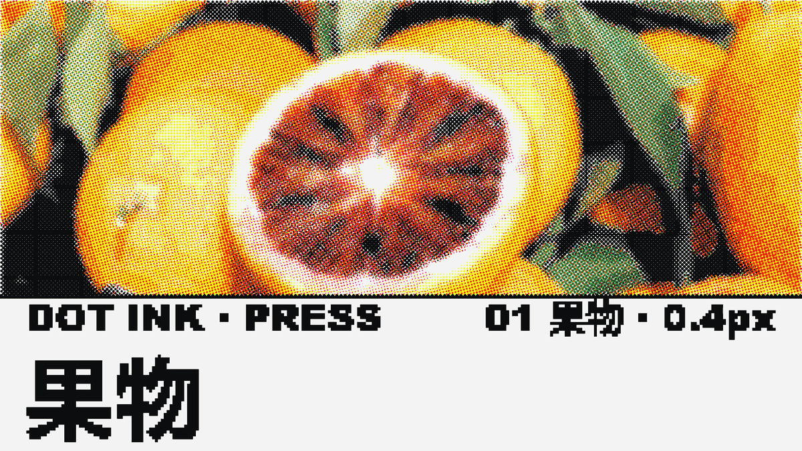
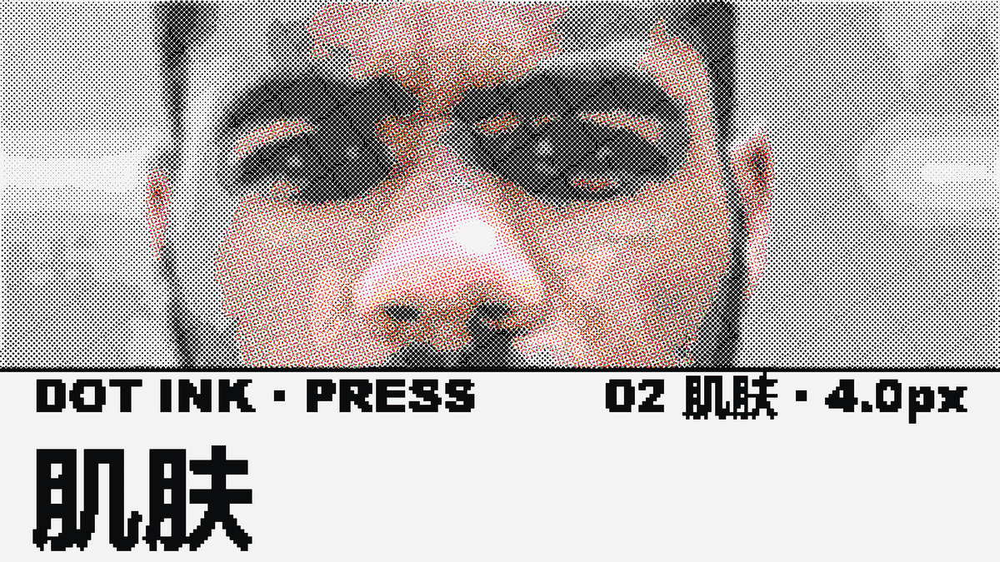
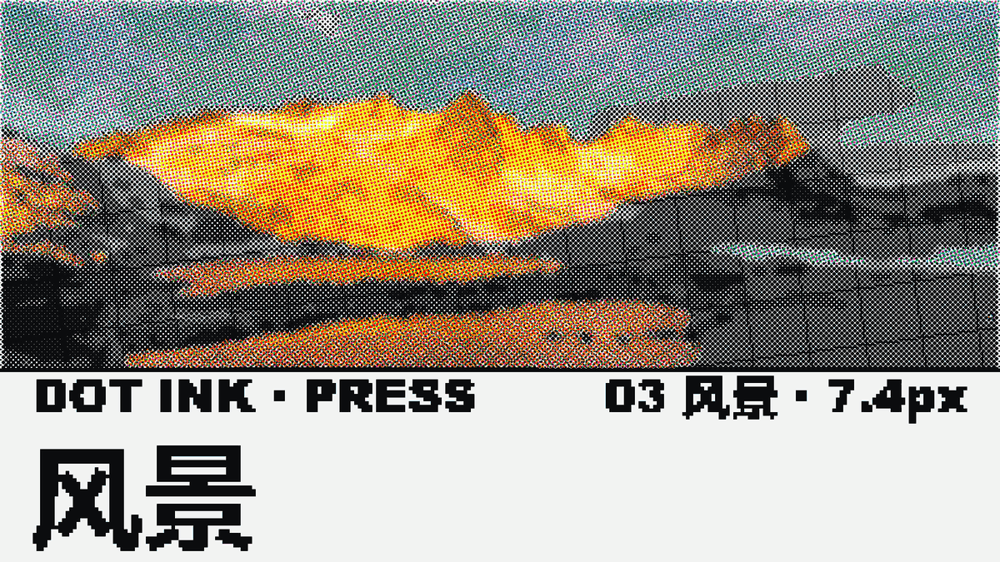
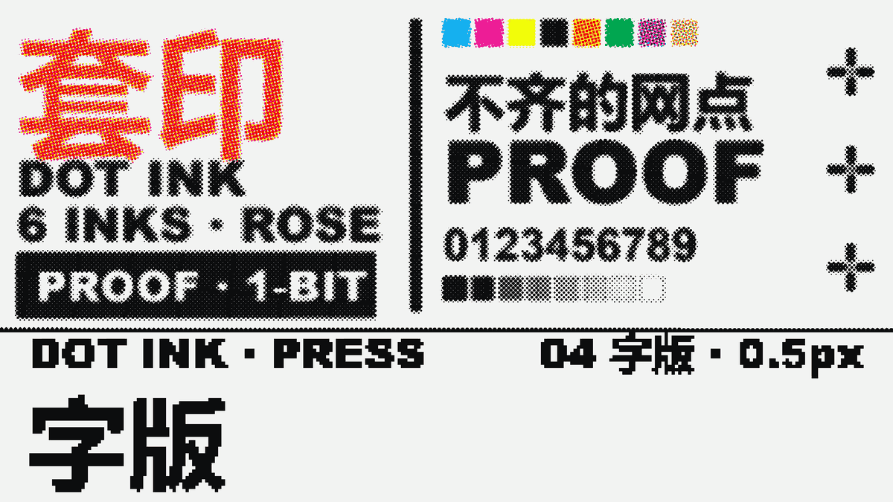
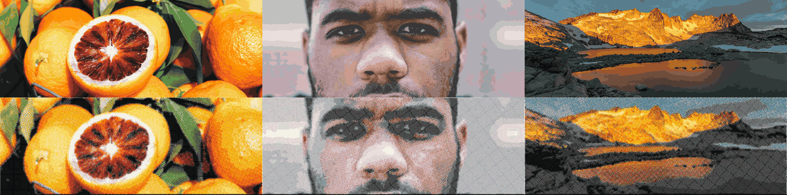
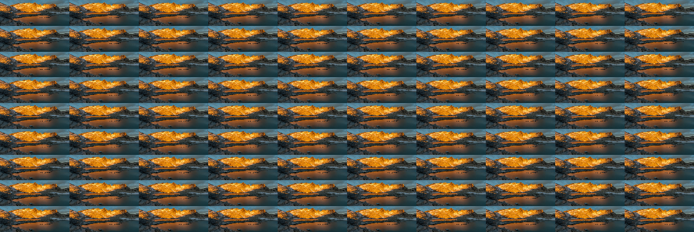

已暂停
套印偏差（最大）—
总墨量 TAC（覆盖率之和）—
墨量 w 上限 / 被压格—
实到色数—
漏色重影面积—
平均叠版—
画布 1:1（backing）—
Dot Ink · Press · 实时
同一张画面分成四张版：C / M / Y / K 各一张，每张版上仍然只有「有墨」和「没墨」，没有灰。
颜色不是画出来的，是四张版叠出来的 —— 所以一帧最多落在 2^N 个颜色上（四版 = 16 个掩码，
格点集实到 15 色，因为 CMY 与 CMYK 叠出来都是纯黑）。
默认这一档是六张版：CMYK 之外再加橙与绿（Hexachrome 六色）。2^6 = 64 个掩码，
按颜色折叠后实到 35 色。多这两张版不是为了「色更多」好看，是因为饱和橙绿那一段 CMYK 压不出来：
橙的蓝通道得靠三色一起压到 0，纸面上那已经是黑，不是橙。代价是每个颜色只有三个方程、六个未知数 ——
分色必须在覆盖率域里解（separateCov），四色那套公式 UCR 解不出 O / G 两版。
右侧留了「分色：覆盖域 / 公式」开关，切一下就能看见差别。
版与版之间留一点点对不准：位移 2–7px、微转 0.2–0.5°。对不准的地方，
边缘就漏出一圈只有单版盖到的颜色 —— 早期印刷机的漏色重影。这就是这一层要的动态：
版永远在「快要对齐又不断错开」的地方晃。
画布是套印格点集上的墨与纸；周围的控件是普通界面。判据不套用单色网点的 M1/M2， 用的是套印自己的四条（只落在格点集上、总墨量、色数 ≤ 格点集、每版都有墨）。 这四条跟着当前墨组走：六版时格点集是 64 个掩码、色数上限 35，三版时是 8 个掩码、上限 8 —— 行数不变，值跟着变。 第四条的「每版」按实际版数算，所以切到「六色 + 公式」时它会红：UCR 式子根本没有 O / G 这两张版。
对齐时每颗网点是干净的纯色，中间调最平；位移一起来，边缘开始长色边、色数上升； 到 5px 以上，同一颗点分裂成两三个错开的彩点 —— 那正是「早期印刷机没套准」的样子。 三张小图都用当前的点距与分色参数，改参数会一起重画。
17 秒的片子，四张题材换着印，套印偏差从 0 一路长到 9.3px 再收回去。
它回答的不是「好不好看」，是这套六色能不能承载多元内容：果物给四色的短板（饱和橙绿压不出来），
肌肤给容差最低的连续中间调，风景把色域一次摊开，字版用硬边当偏差的尺子、顺便把自己署名印一遍。
片子不是录屏 —— 片源 tools/press-reel.html 的每一帧都是 t 的纯函数，
由 tools/press-reel.mjs 逐帧取 __reel.frame(t) 再喂 ffmpeg。




| t | 题材 | 实到色数 | 漏色重影 | 套印偏差 | 读起来 |
|---|---|---|---|---|---|
| 0.8 s | 果物 | 10 / 35 | 14.0% | 0.01 px | 刚开场，只有黑版与少量品红上墨，橙绿两版还没进 |
| 2.2 s | 果物 | 31 / 35 | 24.7% | 0.44 px | 六版上齐、几乎对齐 —— 橙绿两版各吃掉 12.5% / 8.3% 面积 |
| 6.5 s | 肌肤 | 27 / 35 | 7.3% | 3.82 px | 中间调最吃叠印，肤色过渡带开始长毛边 |
| 10.5 s | 风景 | 31 / 35 | 18.4% | 9.29 px | 峰值：偏差 1.3 个点距，同一颗网点裂成两三个错开的彩点 |
| 13.0 s | 字版 | 25 / 35 | 2.9% | 6.95 px | 归位段开始，硬边上的彩边一格一格收窄 |
| 14.3 s | 字版 | 24 / 35 | 2.8% | 0.00 px | 归位：偏差归零，字缘重新变干净 |
| 16.95 s | 字版 | 2 / 35 | 0.0% | 0.00 px | 末帧：各版依次离版，只剩黑版与纸 |
为什么网页版不能是 yuv420p。套印层的现象就是网点边缘一两像素宽的漏色，
而 4:2:0 的 2×2 色度下采样正好把那一圈抹平 —— 编码器越省，本层的立论掉得越多。
同一帧（t=13.0）按格取平均再比，四档编码的格均色差（sRGB 0..255）是：
母版 libx264rgb / qp18 0.10（p95 0.47）· 本页 yuv444p / crf33 / 1280 3.1（p95 11.7）
· 同尺寸 yuv420p / crf36 4.29（p95 17.4）· 960 / 444p / crf33 4.17（p95 12.2）。
逐像素比会更难看：母版有 78% 像素逐字节相同，yuv444p 只剩 2.6% —— 差值全在网点边缘的抗锯齿像素上，
那不是色偏，那是「点还圆不圆」。所以网页版取了 1280 而不是 960：同样体积下先保像素密度。
体积与落点。网页版 1280×720 · yuv444p · crf 33 = 7.53 MB（2.6 Mbps，仓内）；
母版 1920×1080 · libx264rgb（gbrp）· qp 18 = 221.15 MB（109 Mbps，Release 附件，仓内不放）。
母版是无损链：片源 frame(t) 直出的 PNG 与解码帧在 qp 0 下逐字节相同。
片源与导出的完整口径（含两个实测坑：--remote-debugging-port=0 拿不到端口、
启动进程会立刻 exit 0）写在 docs/05 §10。
上面那条片子是四张写死的样张。这一条不是 —— 素材是三段真的 mp4，
经过两件命令行工具（press-clip.mjs 与 press-reel.mjs）变成套印片。给什么视频就印什么，题材、时长、偏差曲线都由参数决定。
（这三段的素材是本站那三张 CC0 照片各做的一段缓推镜头；管线入口只认视频文件，不认静帧。）
中间那一步是关键：视频先被压成一张格子图集（一格 = 一帧的一个像素），
也就是分色器真正看见的那个粒度；再往下的每一帧，仍然只是 t 的纯函数。

# ① 静帧 → 一段缓推镜头。这一步不是管线的一部分：任何 mp4 都能从这里进来。 ffmpeg -y -loop 1 -framerate 30 -t 3.1 -i media/press-src-fruit.jpg \ -vf "crop=1200:447:0:171,scale=854:318:flags=lanczos, zoompan=z='1+0.0007*on':x='iw/2-(iw/zoom/2)':y='ih/2-(ih/zoom/2)':d=1:s=854x318:fps=30" \ -frames:v 90 -c:v libx264 -crf 18 .visual-audit/pipe/fruit-band.mp4 # ② 视频 → 格子图集（一格 = 一帧的一个像素，行优先；同目录落一个 .json sidecar） node tools/press-clip.mjs --in .visual-audit/pipe/fruit-band.mp4 \ --out .visual-audit/pipe/fruit.png --cells 274x102 --fps 30 --dur 3 # … 另两段同理（skin / land），每段 90 帧 → 10×9 图集 # ③ 图集 → 套印片（多段用 | 分隔；每段自带秒数，末尾自动补一张字版） node tools/press-reel.mjs \ --clips "01 果物~.visual-audit/pipe/fruit.png~3|02 肌肤~.visual-audit/pipe/skin.png~3|03 风景~.visual-audit/pipe/land.png~3" \ --type 3 --inks hex --angles rose --sep cov --mode free --crf 18

.json sidecar，不认视频解码器；
所以导出是确定性的：同一个图集、同一个 t，得到的永远是同一帧。
图集尺寸是 cols = ceil(√N) 决定的，N 变了格子排布跟着变，但每格永远是 274×102。| t | 段 | 实到色数 | 漏色重影 | 套印偏差 | 读起来 |
|---|---|---|---|---|---|
| 0.80 s | 01 果物 | 18 / 35 | 26.4% | 0.06 px | 刚开场：只有黑版与品红、黄上墨，橙绿两版还没进 |
| 3.84 s | 02 肌肤 | 29 / 35 | 7.2% | 3.43 px | 六版上齐，偏差爬到半个点距：肤色过渡先长出彩边 |
| 6.96 s | 03 风景 | 33 / 35 | 13.3% | 6.66 px | 接近峰值：山脊与湖面同时裂成错开的彩点 |
| 9.96 s | 04 字版 | 24 / 35 | 2.8% | 0.00 px | 归位完成：硬边上的彩边收干净，只剩网点本身 |
| 11.94 s | 04 字版 | 2 / 35 | 0.0% | 0.00 px | 末帧：各版依次离版，只剩黑版与纸 |
为什么中间要多一张图集。分色器是按格工作的：一格取一个平均色，
然后决定这一格上哪几版墨、每版多厚。如果每次都从视频解码，同一格的平均值会随解码器、随缩放算法漂 ——
片子就不再有「同一个 t 出同一帧」这条性质。压成图集之后，一格 = 一个像素，
取平均这件事被提前做掉、并且只做一次。scale 用 area 平均、
format=rgb24 必须放在 scale 之前：放后面时 ffmpeg 是在解码器的原生格式
（yuv420p，色度已经只有一半分辨率）上做面积平均、再转 RGB，算的不是引擎在 sRGB 8bit 上算的那个平均值。
实测同一段素材、同一格：格均色差平均 0.75 / 255、最大 10 / 255，12.8% 的像素差 ≥2 ——
落在墨量上就是「这一格该不该上这一版」在边缘处翻面。顺带一句：字节数差多少完全看素材
（实测 0–12%，rgbtestsrc 那种本来就是 RGB 生成的源甚至是 0），所以这条判据只能写成
「在哪个色彩空间里做平均」，写成百分比是假的。
三个会静默出错的坑。① tile 滤镜在帧数不够时会补满并退出 0 ——
「恰好 N 帧」只能自己数，这是 press-clip.mjs 最核心的那条判据。
② 导出侧的帧数必须取页面报的片长：用命令行默认的 17 s 去截一条 11.5 s 的片子，后半段全是重复末帧。
③ 偏差曲线的回落段是锚在字版上的，不是锚在秒数上：给了素材之后字版起点会变，
按固定秒数回落会让长片先归位、后面一路干净地等 —— 最该被看见的那一秒半落在没人注意的地方。
素材挑得不对，管线救不回来。仓里那段 media/demo-clip.mp4 也跑过同一条链路
（128 帧图集 → 218 帧 / 7.27 s 的片子），但它画面是 854×480 的抽象彩块，压到 274×102 格之后只剩几道
等高线状的弧，读不出内容 —— 这不是管线坏了，是素材的细节尺度比格子还细。
能用的素材有两条硬条件：16:9（否则版心被裁掉一条），有明确主体、明暗各半
（全暗的素材会让黑版吃掉一半面积，剩下几版没活干，色域就白搭了）。
不改参数时，输出逐字节不变。片源原有那条 17 秒分镜没有被参数化破坏：
所有时间常数乘 TS = DUR / 17，而当 TS = 1 时浮点逐位相同。
验收方式是拿 5 帧（t = 2.2 / 6.5 / 10.5 / 13.8 / 16.9）比 SHA-256 —— 改造前后全部相等，独立跑过两轮。
press-clip.mjs 与 press-reel.mjs --clips 的完整口径写在 docs/05 §11。